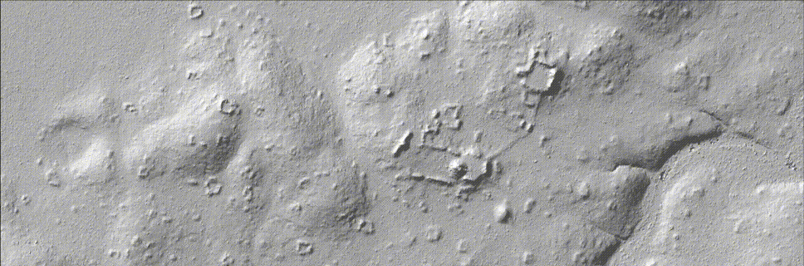

Dos Hombres to Gran Cacao Archaeological Project
The Dos Hombres to Gran Cacao Archaeological Project (DH2GC) is a 12-km survey transect connecting two Maya city-centers in Northwestern Belize. Director of the field school, Dr. Marisol Cortes-Rincon has been conducting research on the Maya hinterlands since 2009. Students at Humboldt State University (HSU) receive the opportunity to gain experience in field techniques, geospatial mapping, and laboratory curation and analysis.
In 2016, a total of 274.6 km² of LiDAR was flown by the National Center for Airborne Laser Mapping (NCALM) for a consortium of archaeologists working in Northwestern Belize. This data provided DH2GC with a 0.5-meter resolution Digital Elevation Model (DEM) as a raster layer for copious methods of terrain analysis and visualization mapping.
Current research aims at raster data manipulation to enhance terrain visualization and user identification and interpretation of archaeological features. LiDAR applications for DH2GC research are in preliminary stages, but further geospatial analysis will shed light on landscape settlement patterns and exploitation of natural resources, the size and boundary (if any) of Maya sites, and the heterarchical relationship between commoner settlement and regional centers.